Clase 11
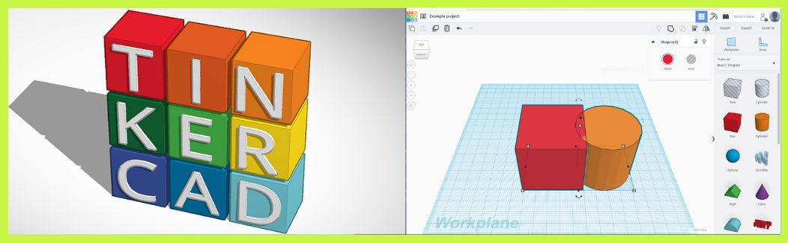El martes 2 de abril, durante nuestra clase virtual, llevamos a cabo la práctica que se discutió en la sesión anterior sobre cómo medir la proximidad de un cuerpo utilizando la configuración de void loop, digitalWrite, entre otros recursos en Arduino. Fue una experiencia práctica enriquecedora que nos permitió aplicar los conceptos teóricos aprendidos y comprender mejor su funcionamiento en la práctica.
Clase 12
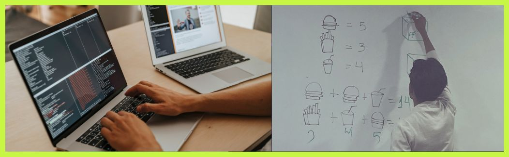El miércoles 3 de abril, nos reunimos en clase presencial para realizar dos ejercicios asignados por el profesor que involucraban el uso de componentes con Arduino. Esta sesión nos brindó la oportunidad de trabajar directamente con los materiales y fortalecer nuestra comprensión práctica de los conceptos. Además, durante esta clase, el profesor nos entregó nuestras notas de la bitácora, lo que nos permitió evaluar nuestro progreso y comprender áreas en las que podríamos mejorar en el futuro.
Clase 13
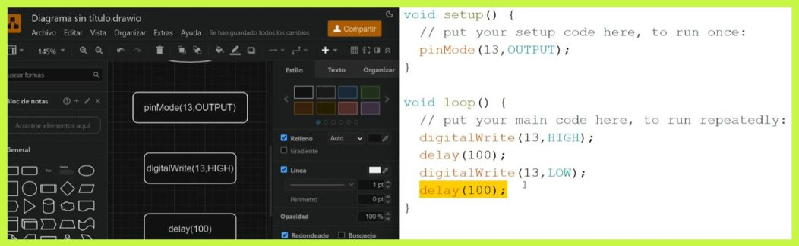El martes 30 de abril en laboratorio 2 aprendimos a hacer diagramas de flujo. El profesor nos recomendó las apps "Diagramas Net" y "Flowgorithm" para practicar. ¡Emocionado por explorar estas herramientas y seguir aprendiendo!.
Clase 14

El día miércoles 1 de mayo no hubo clase por el feriado por el día del TRABAJADOR.
Clase 15
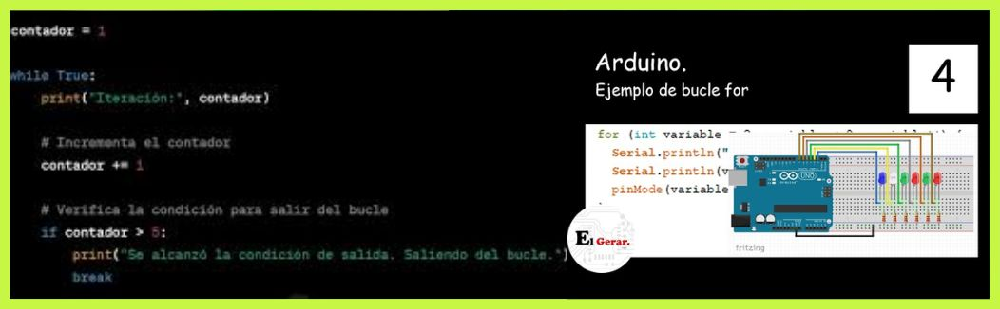El día martes 7 de mayo profundizamos en los conceptos de iteración utilizando los controles (for) y (while). Aprendimos que el bucle for es ideal para repeticiones finitas, donde conocemos la cantidad de iteraciones, mientras que el bucle while es más adecuado para repeticiones potencialmente infinitas. El profesor ilustró estos conceptos con ejemplos prácticos, como el diseño de un circuito de semáforo en Tinkercad. Al final de la clase, representó estos controles en diagramas de flujo para una mejor comprensión.
Clase 16
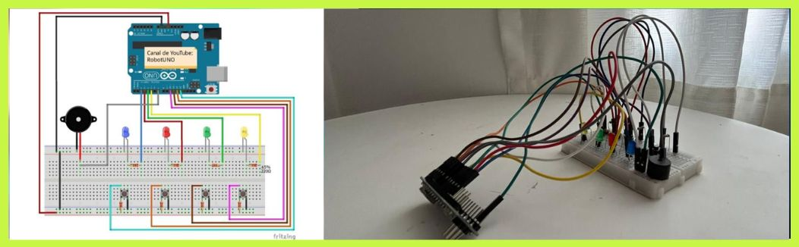El miércoles 8 de mayo avanzamos en nuestro proyecto de Arduino para el juego Simon Dice. Nos dedicamos a realizar las conexiones necesarias y a escribir el código para el juego. Durante la sesión, observamos cómo cada conexión en el esquema del circuito se correspondía con una parte específica del código de programación, lo que nos permitió comprender mejor la interacción entre el hardware y el software en nuestro proyecto.
Clase 17
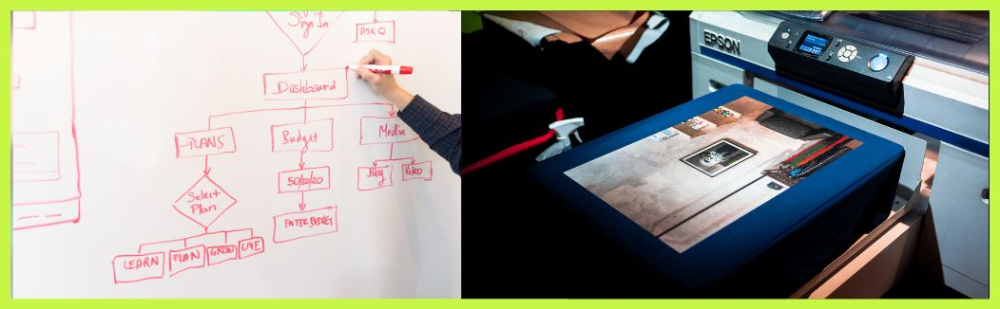En la clase de Laboratorio 2 del martes 14 de mayo, exploramos las características de la impresión 3D y aprendimos sobre el diagrama de flujo para este proceso. El profesor nos guió en la creación del diagrama y luego nos adentramos en la parte práctica, comenzando la implementación de nuestro proyecto "Simón Dice"
Clase 18
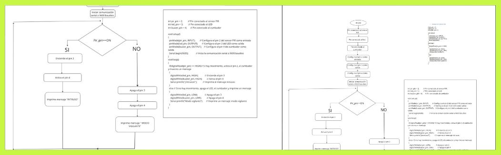En la clase presencial del Laboratorio 3 del miércoles 15 de mayo, revisamos el diagrama de flujo de nuestro proyecto y discutimos los códigos necesarios. Luego, montamos el circuito y realizamos las conexiones requeridas. Emocionantemente, pudimos presenciar por primera vez el funcionamiento de nuestro juego de Simón Dice. Fue una combinación de aprendizaje teórico y práctico que nos dejó entusiasmados por el progreso de nuestro proyecto.
Clase 19
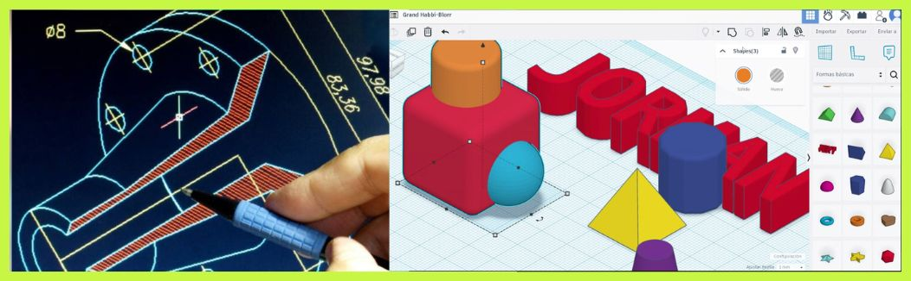Revisamos el diseño en Tinkercad, aprendiendo a modificar dimensiones de figuras. Trató sobre la fabricación digital y sus ventajas en el uso de materiales. Vimos herramientas como impresoras y softwares. Explicó CAD, CAE y CAM, y sus aplicaciones en diseño y manufactura. También aprendimos sobre nubes de puntos, polígonos, y revisamos programas gratuitos, así como opciones de pago.
Clase 20
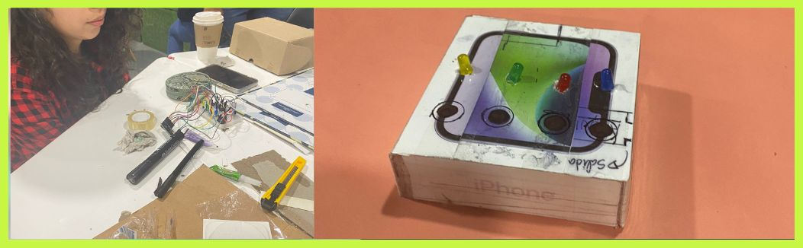En la clase presencial de Laboratorio 2, armamos el prototipo de nuestro juego "Simon Dice" utilizando la caja de un iPhone y varios elementos diversos. Este ejercicio nos permitió visualizar las medidas y el diseño del juego antes de trasladarlo a Tinkercad para crear un modelo en 3D. Fue una sesión práctica donde combinamos creatividad e ingeniería para darle forma a nuestra idea inicial.
Clase 21
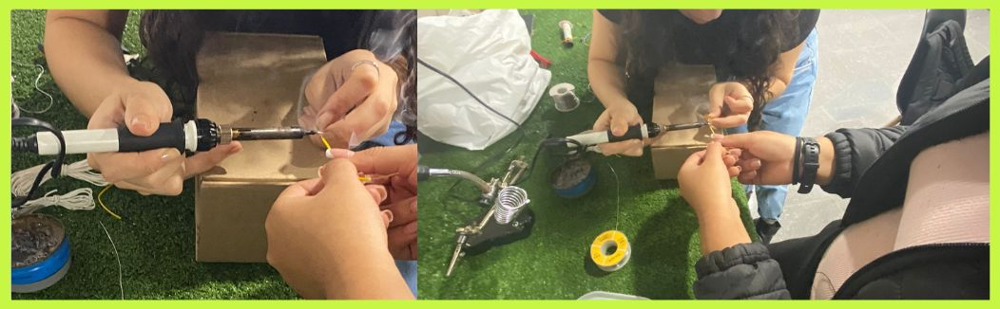El martes 28, durante la clase online, fuimos asignados a salas privadas con nuestro grupo para continuar avanzando en el de nuestro juego en 3D utilizando Tinkercad. Luego, investigamos proveedores de pulsadores de colores para la impresión. Posteriormente, nos dimos cuenta de que la impresión tardaría aproximadamente 6 horas, por lo que decidimos que el miércoles, cuando tengamos clase presencial, revisaremos este asunto en detalle.
Clase 22
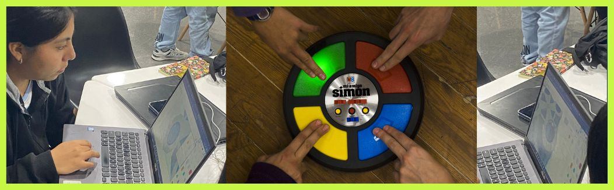El miércoles 29, el profesor nos explicó las tareas que debemos realizar para el tercer promedio. Luego, con dos miembros de mi grupo, soldamos los cables para el Arduino, mientras que los otros compañeros continuaron avanzando en el diseño del juego "Simón dice" en 3D.